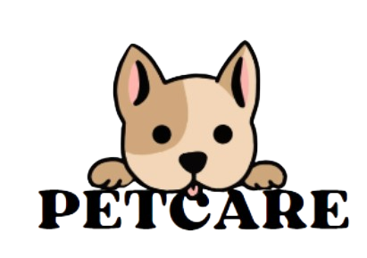
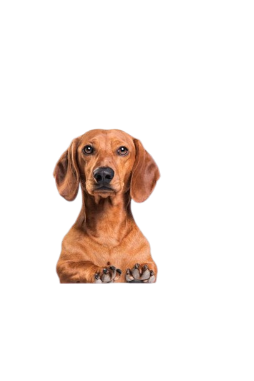
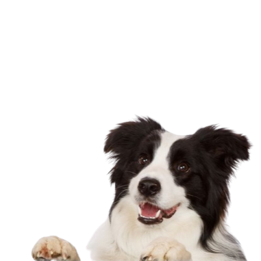
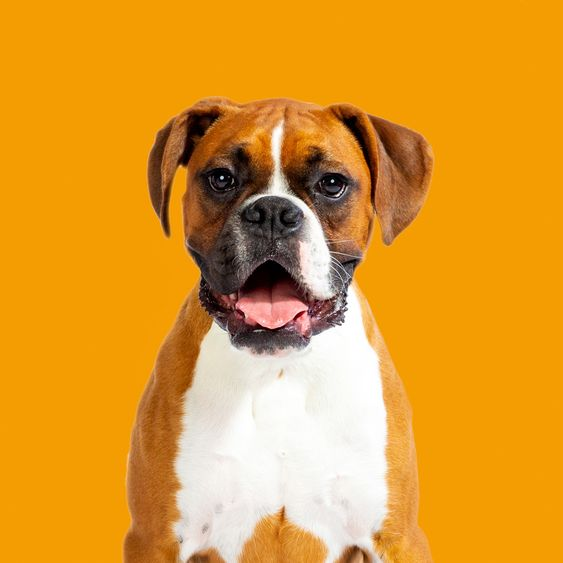
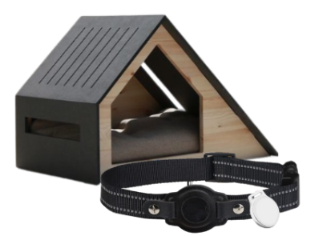
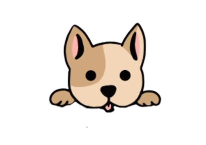

01 · IOT
Casa inteligente
Integración de hardware y sensores para conocer el entorno de tu mascota.
ANDROID · IOT · FIREBASE
Explore a browser adaptation of my Android project, built around the original PetCare visual assets and app concepts.
This is a web prototype. Hardware readings, GPS and camera are illustrative; the original Android project remains in the repository.

YOUR PET, YOUR PEACE OF MIND
Controla y descubre más sobre el bienestar de tu mascota.

HOLA DE NUEVO
Entra para ver el mundo de tu mascota.
¿Aún no tienes cuenta?
Demo: cualquier correo y contraseña válidos te permiten continuar.

ÚNETE A PETCARE
Un pequeño paso para cuidar mejor.
¿Ya tienes cuenta?
¿Listos para otro día juntos?

Tu mejor amigo · Perro
Valores ilustrativos inspirados en el flujo IoT del proyecto.
Vista ilustrativa del módulo GPS
Sin coordenadas reales · no conectadoVista conceptual del módulo de vigilancia.
Conoce las ideas y componentes que forman el ecosistema PetCare.
Integración de hardware y sensores para conocer el entorno de tu mascota.
Concepto de control de iluminación de la casa inteligente.
Idea de cámara conectada a Raspberry Pi para observar el entorno.

Componentes físicos y comunicación entre dispositivos IoT.
Cuenta de demostración
LOCAL · DEMO
Una aplicación para explorar la conexión entre cuidado animal, dispositivos inteligentes y desarrollo móvil.
GitHub repository ↗Los cambios se guardan solo durante esta sesión de demostración.